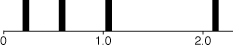
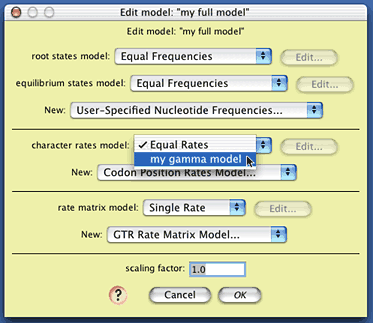
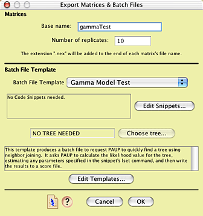
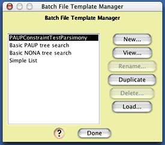

Simulating DNA sequence evolution,
with examples of hypothesis testing
This section provides a brief introduction to some of the analyses
you can do by simulating DNA sequence evolution, including:
Example files for this chapter are in the "Character_Simulations"
folder within the "examples" folder within Mesquite_Folder.
Simulating DNA sequence evolution
on a tree
First, let's try evolving DNA sequences up the branches of a
model tree, thereby creating an entire simulated matrix. Open
the example file "01-modelTree.nex"
and you will be presented with a tree. For the moment it doesn't
matter where this tree came from; the important thing to note
is that it has branch lengths inferred from a matrix of 18S rDNA;
this matrix is also included in the file.
In order to simulate DNA sequences, you need:
- A tree, with branch lengths specified. A tree with branch
lengths is included in this example file.
- A specification of how the DNA sequences evolve. This model
could have many elements. One common form of model specifies
the relative frequencies of A, C, G, and T; the relative rates
of change of the different characters; and the relative rates
of change between A and C, A and G, and so on.
Creating a model of character evolution
For sake of simplicity, let's presume that A, C, G, and T occur
at equal frequencies, and that all pairs of nucleotides have equal
rates of change between them. To make it interesting, though,
let's presume that some characters evolve more quickly than others,
with the distribution of rates of change following a discrete
gamma distribution with shape parameter 1.5. If one presumes (as
we will) that there were four categories of rates, then this model
presumes that one quarter of the characters have rate 0.225, one
quarter 0.589, one quarter 1.05, and the rest 2.136, as shown
in the following figure:

To create this model of character rate variation in Mesquite,
choose (Tree)
Characters>New Character Submodel>Gamma Rate Variation Model...
You will be presented with a dialog box in which you can choose
the name of the model you will create; you might call it "my
gamma model". You will then be presented with a dialog box
allowing you to specify the nature of the model; set the shape
parameter to 1.5:

Now we need to create a composite model of character evolution
that specifies both this gamma rate variation model, the state
frequency model, and the state-to-state rate model. To do this,
choose (Tree)
Characters>New Character Model>Composite DNA Simulation
Model..., name the model (perhaps call it "my
full model"), and you will be presented with a dialog box
in which you can choose the various submodels:

The only element of this model we will change is
the character rates model; choose "my gamma model" from
the drop-down menu to select the gamma distribution model you
created as the model of site-to-site rate variation. The model
"my full model" is now ready to use.
Note that the dialog box in which you edited "my
full model" has button with a ? on it ( ).
When a button like this is present in a Mesquite window, touching
on it will display a small note with information about how to
use the window's feature.
).
When a button like this is present in a Mesquite window, touching
on it will display a small note with information about how to
use the window's feature.
Simulating evolution
Now choose (Tree)
Characters>Make New Matrix from>Simulated Matrices on Current
Tree. This will ask Mesquite to simulate evolution
of characters up the current tree in the tree window to produce
a new matrix. You will be asked what sort of character simulator
to use. As we wish to evolve a DNA sequence up the tree's branches,
choose "Evolve DNA characters" from the list. (There
might be other options presented, such as Evolve Continuous Characters,
but we don't wish to try that now.) You will then need to chose
the model of DNA sequence evolution; choose the composite one
you created earlier called "full model". When it queries
for the number of character, choose a large number, such as 2000.
When it asks for the name of the matrix to be created, call it
"simulated" (although you could choose another name,
if you wish). Mesquite will then simulate evolution, and a matrix
will be produced, such as this one:

Examining the results of the simulation
Let's see whether the rate variation between characters
suggested by this simulated matrix matches a gamma distribution
with shape parameter 1.5, as used in the model. First, save the
matrix to a file so that you can read it into PAUP*. Choose (Character
Matrix) Characters>Save Copy of Matrix>simulated
to save a copy of your newly created matrix; perhaps name the
file "Simulated Matrix".
In PAUP* 4, execute the file Simulated Matrix, and
then execute the following commands:
nj;
lset nst=1 basefreq=equal rates=gamma shape=estimate;
lscore 1;
(If you don't know how to give PAUP* commands, please
read your PAUP* documentation. There are equivalent ways to give
these commands in the MacOS versions using dialog boxes, but it
is much easier for us to describe what to do with these text commands.)
The first command ("nj;") will find a
neighbor-joining tree. While this might not be the best way to
get a tree, but it will be fast, and give a tree that is good
enough for our purposes. The second command ("lset...")
sets the model used for likelihood calculations to be the model
used by Mesquite in the simulations, except that the shape parameter
used is not specified, but is instead estimated from the data.
The third command ("lscore 1;") tells PAUP* to calculate
the likelihood of the tree, in the course of which it will also
estimate the shape parameter of the gamma distribution using likelhood.
You might end up with PAUP* reporting something like this:
Tree 1
-------------------
-ln L 19742.05025
Shape 1.583552
The shape parameter should be around 1.5.
Building more complex models
More complex composite models of DNA evolution can
be built by choosing among the following:
Models of root state frequencies:
- Equal Frequencies: equal frequencies of states
- Empirical Frequencies: frequencies of states the same as that
found in an existing character matrix
- User-specified Nucleotide Frequencies: frequencies of nucleotides
specified by the user. You can create a model of this sort by
choosing (Character
Matrix) Characters>New Character Submodel>User-specified
Nucleotide Frequencies... and then entering the appropriate
values in the dialog box.
Models of equilibrium state frequencies on other
branches:
- Equal Frequencies: equal frequences of states
- Empirical Frequencies: frequencies of states the same as that
found in an existing character matrix
- User-specified Nucleotide Frequencies: frequencies of nucleotides
specified by the user. You can create a model of this sort by
choosing (Character
Matrix) Characters>New Character Submodel>User-specified
Nucleotide Frequencies... and then entering the appropriate
values in the dialog box.
The above two submodels corresponds in PAUP* to
the specifying the base frequencies in the likelihood settings;
note that PAUP* does not allow separate specification of the model
of frequences and the root and at other branches.
Models of rate variation among characters:
- Equal Rates: all characters evolve at the same rate.
- Codon Position Rates Model: a model specifying the relative
rates of the different codon positions. If you wish to have
the codon positions match those in an existing matrix, then
codon positions need to be specified for a DNA matrix. To do
this, choose (Character
Matrix) Characters>List of Characters to see the
current codon positions. Select the characters in this list
window, and then touch on the title of the column "Codon
Position". A drop-down menu will appear in which you can
choose to set the codon positions to a sequence like 123123123...
as appropriate.
- Gamma Rates Model: a model specifying that rates of characters
evolve according to a gamma distribution.
- Gamma Invar Rates Model: a model specifying that a proportion
of the characters are invariant, and the remainder follow a
gamma distribution.
- Proportion Invariant Model: a model specifying that a proportion
of the characters are invariant, and the remainder evolve at
one rate.
The first model ("Equal Rates") is built
in; you can create a model of the other kinds by choosing the
appropriate items from the (Character
Matrix) Characters>New Character Submodel menu and
then entering the values in the dialog box.
Model of rate matrices:
- Single Rate: all changes between nucleotides occur at the
same rate.
- Ti/Tv Rate Matrix Model: the two-parameter rate matrix model
in which transversions occur at a different rate than transversions.
- GTR Rate Matrix Model: the General Time Reversible, six-parameter
rate matrix model in which you can specify rates of each type
of nucleotide change.
The first model ("Single Rate") is built
in; you can create a model of the other kinds by choosing the
appropriate items from the (Character
Matrix) Characters>New Character Submodel menu and
then entering the values in the dialog box.
Batch Architect: Simulating,
exporting, and analyzing multiple matrices
Mesquite's Batch Architect package
can be used to create multiple simulated matrices, export them
to files, and create one or more files that provide instructions
to programs to analyze the files produced. These instruction files
are called "batch files".
One could, for example, examine the quality of Mesquite's
simulation algorithms by simulating 100 matrices using a gamma
model of character rate variation. In addition to creating 100
files with matrices, Mesquite would create a batch file containing
instructions for PAUP* to estimate the gamma shape parameter for
each of the matrices and save the resulting values to a score
file. Mesquite would also create an file that would provide instructions
to Mesquite to allow it to read PAUP*'s score file and display
the resulting distribution of estimated gamma shape parameters
in a chart. As a concrete example, simulation of 1000 matrices
of 2000 characters each under a model with a gamma shape parameter
of 2.0, estimating of the shape parameter by PAUP* for each of
these matrices, and processing of the results by Mesquite yielded
the following histogram:

In this particular analysis, most matrices were
estimated to have a gamma shape parameter close to that used in
the model that generated the data; the average estimated gamma
shape parameter over the 1000 replicates was 2.017.
Conducting multiple simulations
To conduct an analysis similar to this one, open
up the example file "02-gammaTest.nex".
A complete model of DNA sequence evolution has already been added
to that file, under the name "gamma2model". It specifies,
among other components, character rate variation following a gamma
distribution with shape parameter 2.0. First, you will need to
ask Mesquite to evolve several matrices up the branches of the
phylogeny. Choose (Tree
Window) Analysis > Matrices & Batch Files > Export Matrices
& Batch Files.... You will be presented with a
choice of the source of matrices; choose "Simulated Matrices
on Current Tree", and press OK; for the character simulator,
choose "Evolve DNA characters". When asked to choose
the model, choose "gamma2model".
You will now be presented with the main dialog box
that you will need to master to use Mesquite's simulation tools.
It looks approximately like this:

The top part of the dialog box allows one to choose
the base part of the name of the simulated matrices that will
be produced, as well as to specify how many matrices will be produced
(the "number of replicates"). Let's call have the file
names begin with "gammaTest", so enter that for the
base name. In the interests of time, you can leave the number
of replicates be only 10 (a more thorough analysis would involve
many more replicates).
In addition to creating the matrices, Mesquite will
also produce one or two files accompanying those matrices that
specify commands to be used by various software (e.g. PAUP, NONA,
even Mesquite) to analyze those matrices. The manner in which
these accessory files or "batch files" are written is
controlled by the lower portion of the dialog box. The content
of the batch files is specified by a "batch file template".
There are some templates supplied by Mesquite; you can also build
your own. The template we need to use for this example is not
built into Mesquite; you will need to load it in from a file.
To do this, go into the Templates Manager, by pressing the Edit
Templates button. In the dialog that is presented, you can see
the build-in templates:

To load in the template we need to use, press the
Load button, and open the "GammaTest.template"
file that is in the "templates" folder within the Simulations
examples folder. The template Gamma Model Test will now be added
to the templates list. (You can see the nature of the template
by selecting it in this list and pressing "Edit", but
you needn't do this now.)
Once the template is loaded, press Done to return
to the Export Matrices & Batch Files dialog box. Make sure
"Gamma Model Test" is selected, and press "OK".
You will now be asked to choose a folder to store the created
files. As multiple files will be created, you may wish to create
a new, empty folder to house the files. Once the location is chosen,
you will be asked (after perhaps dismissing a notice or two) for
the number of characters to be simulated within each matrix. Choose
a fairly high number, such as 2000. Mesquite will now proceed
to create through simulation all 10 files, plus two batch files.
One of these batch files will be a file containing
PAUP commands that will instruct PAUP* to read in each matrix
file, quickly build a preliminary tree (using neighbor-joining,
which should be good enough for our purposes), and estimate the
gamma shape parameter using likelihood. The resulting value will
be saved to a PAUP "scorefile". Open up PAUP* 4 (make
sure you have the latest version of PAUP*), and ask it to execute
the file "gammaCommands.nex". After
PAUP has finished its analysis, go back to Mesquite, and choose
(Tree Window)
Analysis > Batch Architect> Show Results via Instruction
File.... You will be asked to first choose an "instruction
file", which is a text file telling Mesquite how to interpret
another file. Choose the file "MesquiteInstructions",
which is the second batch file created by the Gamma Model Test
template. After Mesquite processes the instruction file, it will
ask you to find the results file, which in this case is the score
file created by PAUP*. It should be called "gammaTestScore.scr"
(if the base name of the matrices was "gammaTest");
open it when asked for the results file. You will then be presented
with a histogram of the estimated gamma shape parameter values,
that will look approximately like this:

Of course, your exact values should differ from
these, but should cluster around 2.0. If you repeated this, but
with many more replicates, then you should see a bell-shaped curve,
as shown above.
Testing simulations of more complex models
A test of accuracy of Mesquite's more complex models
can also be done. For example, there are seven parameters in model
that includes a General Time Reversible model of DNA evolution
and assuming a proportion of the characters are invariant with
the remainder following a gamma distribution. In 1000 replicates
of 2000 characters evolved up the branches of a 49-taxon tree,
the average value of these parameters as estimated by PAUP* is
close (within 1.3 %) of the value used in model used in Mesquite,
as shown by the results of one particular analysis:
| Parameter |
Value in model |
Estimated value |
Difference |
| Rate(A<->C) |
1.8700052 |
1.87771 |
0.41% |
| Rate(A<->G) |
4.2537253 |
4.26319 |
0.22% |
| Rate(A<->T) |
2.5286454 |
2.53006 |
0.06% |
| Rate(C<->G) |
0.626305 |
0.63152 |
0.83% |
| Rate(C<->T) |
8.735118 |
8.77468 |
0.45% |
| proportion invariant |
0.506903 |
0.50903 |
0.42% |
gamma
shape |
0.438522 |
0.44422 |
1.30% |
Examples of
tests of phylogenetic hypotheses
You can use Mesquite's Batch Architect and Genesis
packages to build your own statistical tests of various phylogenetic
hypotheses. Some example tests are presented in the following
pages:
Other analyses that Mesquite can do
The examples given about used the
Genesis package in Mesquite to simulate the evolution of characters
under a specified model of DNA evolution, and up the branches of
the current tree on the screen. Many more sorts of analyses can
be done, using different sources of characters other than simulated
DNA data, different sources of trees other than the current tree
on the screen, and different calculations by other programs.
Some of the different sources of character matrices
include:
- Simulators that evolve data other than DNA data, including
continuously valued data.
- Random modifications of existing matrices, including by non-parametric
resampling (as used in classic bootstrap methods), random reshuffling
of data, and jackknifing.
Some of the different sources of trees include:
- Simulations using markovian models of speciation
- Coalescence simulations of gene trees
- Modifications of an existing tree by random modification of
branch lengths
- Modifications of an existing tree by randomly pruning a fraction
of the taxa or by randomly adding taxa
- Randomly sampled trees among all possible trees
- Trees generated by randomly reshuffling taxa at their tips
References
Shull, V., A.P. Vogler, M.D. Baker, D.R. Maddison, and P.M. Hammond.
2001. Sequence alignment of 18S ribosomal RNA and the basal relationships
of adephagan beetles: Evidence for monophyly of aquatic families
and the placement of Trachypachidae. Systematic Biology, 50:945-969.